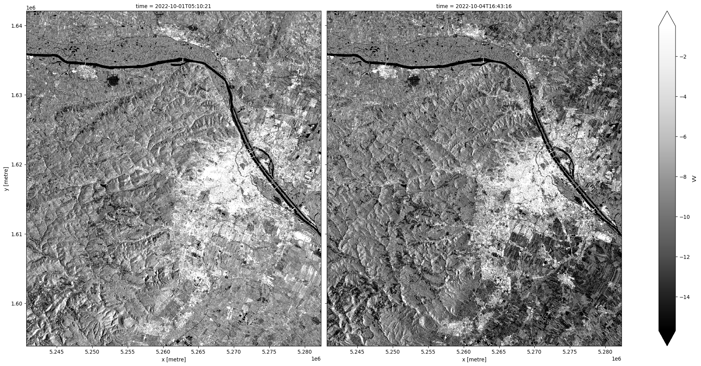

import folium
import pystac_client
from odc import stac as odc_stacThis notebook demonstrates how to access radar data in a SpatioTemporal Asset Catalog (STAC) Catalogue using the pystac library. In this example, we use Sentinel-1 data from the EODC (earth observation data and high performance computing service provider based in Vienna) STAC catalog. In the further process, we will learn how to query a STAC catalog, select specific items, and display the metadata and the actual image.
1.1 Data Discovery
eodc_catalog = pystac_client.Client.open("https://stac.eodc.eu/api/v1")
eodc_catalog- type "Catalog"
- id "stac-fastapi"
- stac_version "1.1.0"
- description "A STAC-compliant API to query for metadata within the EODC Data Catalogue."
links[] 9 items
0
- rel "self"
- href "https://stac.eodc.eu/api/v1"
- type "application/json"
1
- rel "root"
- href "https://stac.eodc.eu/api/v1/"
- type "application/json"
- title "Root"
2
- rel "data"
- href "https://stac.eodc.eu/api/v1/collections"
- type "application/json"
- title "Collections available for this Catalog"
3
- rel "conformance"
- href "https://stac.eodc.eu/api/v1/conformance"
- type "application/json"
- title "STAC/OGC conformance classes implemented by this server"
4
- rel "search"
- href "https://stac.eodc.eu/api/v1/search"
- type "application/geo+json"
- title "STAC search [GET]"
- method "GET"
5
- rel "search"
- href "https://stac.eodc.eu/api/v1/search"
- type "application/geo+json"
- title "STAC search [POST]"
- method "POST"
6
- rel "http://www.opengis.net/def/rel/ogc/1.0/queryables"
- href "https://stac.eodc.eu/api/v1/queryables"
- type "application/schema+json"
- title "Queryables available for this Catalog"
- method "GET"
7
- rel "service-desc"
- href "https://stac.eodc.eu/api/v1/openapi.json"
- type "application/vnd.oai.openapi+json;version=3.0"
- title "OpenAPI service description"
8
- rel "service-doc"
- href "https://stac.eodc.eu/api/v1/docs"
- type "text/html"
- title "OpenAPI service documentation"
conformsTo[] 28 items
- 0 "http://www.opengis.net/spec/cql2/1.0/conf/basic-cql2"
- 1 "http://www.opengis.net/spec/cql2/1.0/conf/cql2-json"
- 2 "http://www.opengis.net/spec/cql2/1.0/conf/cql2-text"
- 3 "http://www.opengis.net/spec/ogcapi-common-2/1.0/conf/simple-query"
- 4 "http://www.opengis.net/spec/ogcapi-features-1/1.0/conf/core"
- 5 "http://www.opengis.net/spec/ogcapi-features-1/1.0/conf/geojson"
- 6 "http://www.opengis.net/spec/ogcapi-features-1/1.0/conf/oas30"
- 7 "http://www.opengis.net/spec/ogcapi-features-3/1.0/conf/features-filter"
- 8 "http://www.opengis.net/spec/ogcapi-features-3/1.0/conf/filter"
- 9 "https://api.stacspec.org/v1.0.0-rc.1/collection-search"
- 10 "https://api.stacspec.org/v1.0.0-rc.1/collection-search#fields"
- 11 "https://api.stacspec.org/v1.0.0-rc.1/collection-search#filter"
- 12 "https://api.stacspec.org/v1.0.0-rc.1/collection-search#free-text"
- 13 "https://api.stacspec.org/v1.0.0-rc.1/collection-search#query"
- 14 "https://api.stacspec.org/v1.0.0-rc.1/collection-search#sort"
- 15 "https://api.stacspec.org/v1.0.0-rc.2/item-search#filter"
- 16 "https://api.stacspec.org/v1.0.0/collections"
- 17 "https://api.stacspec.org/v1.0.0/collections/extensions/transaction"
- 18 "https://api.stacspec.org/v1.0.0/core"
- 19 "https://api.stacspec.org/v1.0.0/item-search"
- 20 "https://api.stacspec.org/v1.0.0/item-search#fields"
- 21 "https://api.stacspec.org/v1.0.0/item-search#query"
- 22 "https://api.stacspec.org/v1.0.0/item-search#sort"
- 23 "https://api.stacspec.org/v1.0.0/ogcapi-features"
- 24 "https://api.stacspec.org/v1.0.0/ogcapi-features#fields"
- 25 "https://api.stacspec.org/v1.0.0/ogcapi-features#query"
- 26 "https://api.stacspec.org/v1.0.0/ogcapi-features#sort"
- 27 "https://api.stacspec.org/v1.0.0/ogcapi-features/extensions/transaction"
- title "EODC Data Catalogue"
The URL https://stac.eodc.eu/api/v1, served over Hypertext Transfer Protocol (HTTP), is a STAC-compliant API endpoint (specific URL address where an API service is available) that leads to the EODC Catalogue. Besides EODC’s, other catalogues can be found on STAC Index, such as United States Geological Survey (USGS) Landsat imagery, Sentinel Hub, Copernicus Data Space Ecosystem, and so on. Briefly spoken, STAC can be used to search, discover, and access metadata of these datasets with the same code. The EODC Catalogue can be accessed on the web via this link as well.
Each STAC catalog, composed by different providers, has many collections. To get all collections of a catalog, we can print all of them and their ids, which are used to fetch them from the catalog.
collections = eodc_catalog.get_collections()
# length of string of collection.id, for pretty print
max_length = max(len(collection.id) for collection in collections)
for collection in eodc_catalog.get_collections():
print(f"{collection.id.ljust(max_length)}: {collection.title}")AI4SAR_SIG0 : AI4SAR Despeckled Sentinel-1 Sigma0 (20m)
ASA_IMP_1P : Envisat ASAR Image Mode Precision Level-1
ASA_IMS_1P : Envisat ASAR Image Mode Single Look Complex Level-1
AUSTRIA_GROUND_MOTION : Austria Ground Motion
AUT_DEM : Austrian High Resolution DEM
BOA_LANDSAT_8 : Bottom of Atmosphere Landsat-8 at 30m resolution.
BOA_SENTINEL_2 : Bottom of Atmosphere Sentinel-2 at 10m resolution.
CGLS_SSM_1KM : Copernicus Global Land Surface Soil Moisture
COP_DEM : Copernicus Digital Elevation Model (DEM)
CORINE_LAND_COVER : Corine Land Cover
DOP_AUT_K_KLAGENFURT : Digital Orthophotos (DOP) Austria - Land Kärnten: Orthofotos Flugblock Klagenfurt
DOP_AUT_K_OSTTIROL : Digital Orthophotos (DOP) Austria - Land Kärnten: Orthofotos Flugblock Osttirol
DOP_AUT_K_TAMSWEG : Digital Orthophotos (DOP) Austria - Land Kärnten: Orthofotos Flugblock Tamsweg
DOP_AUT_K_VILLACH : Digital Orthophotos (DOP) Austria - Land Kärnten: Orthofotos Flugblock Villach
DOP_AUT_K_WOLFSBERG : Digital Orthophotos (DOP) Austria - Land Kärnten: Orthofotos Flugblock Wolfsberg
DOP_AUT_K_ZELL_AM_SEE : Digital Orthophotos (DOP) Austria - Land Kärnten: Orthofotos Flugblock Zell am See
DOP_AUT_K_ZELTWEG : Digital Orthophotos (DOP) Austria - Land Kärnten: Orthofotos Flugblock Zeltweg
DOP_AUT_ST_BISCHOFSHOFEN : Digital Orthophotos (DOP) Austria - Land Steiermark: Orthophotos Flugblock Bischofshofen
DOP_AUT_ST_GRAZ : Digital Orthophotos (DOP) Austria - Land Steiermark: Orthophotos Flugblock Graz
DOP_AUT_ST_KLAGENFURT : Digital Orthophotos (DOP) Austria - Land Steiermark: Orthophotos Flugblock Klagenfurt
DOP_AUT_ST_MARIAZELL : Digital Orthophotos (DOP) Austria - Land Steiermark: Orthophotos Flugblock Mariazell
DOP_AUT_ST_MURTAL : Digital Orthophotos (DOP) Austria - Land Steiermark: Orthophotos Flugblock Murtal
DOP_AUT_ST_SUEDBURGENLAND : Digital Orthophotos (DOP) Austria - Land Steiermark: Orthophotos Flugblock Suedburgenland
DOP_AUT_ST_VILLACH : Digital Orthophotos (DOP) Austria - Land Steiermark: Orthophotos Flugblock Villach
DOP_AUT_ST_WINDISCHGARSTEN : Digital Orthophotos (DOP) Austria - Land Steiermark: Orthophotos Flugblock Windischgarsten
DROUGHT_VULNERABILITY : Drought Vulnerability
DSM_AUT : Austrian Digital Surface Model
ERS_ENVISAT_NRB : ERS-1/2 SAR and ENVISAT ASAR ARD Normalized Radar Backscatter (NRB)
GFM : Global Flood Monitoring
incal-hourly : INCA analysis hourly data (1km)
INTRA_FIELD_CROP_GROWTH_POTENTIAL: Intra-field Crop Growth Potential
RUCIO_SENTINEL2_MFCOVER : Monthly Composite of Fraction of Vegetation Cover
SAR_IMP_1P : ERS-1/2 SAR Image Mode Precision Level-1
SAR_IMS_1P : ERS-1/2 SAR Image Mode Single Look Complex Level-1
SENTINEL1_ALPS_WETSNOW : Sentinel-1 Alps WetSnow
SENTINEL1_GMR0 : SENTINEL1 Radiometric Terrain Corrected Gamma Nought
SENTINEL1_GRD : Sentinel-1 SAR L1 GRD
SENTINEL1_GRD_COVERAGE : Sentinel-1 Coverage Maps
SENTINEL1_HPAR : SENTINEL1 Harmonic Parameters
Sentinel-1_Lacken_Extent : SENTINEL-1 Lacken Extent
SENTINEL1_MPLIA : SENTINEL1 Mean PLIA
Sentinel-1_Reed_Extent : SENTINEL-1 Reed Extent
SENTINEL1_SIG0_20M : SENTINEL1 Sigma Nought (SIG0) Backscatter in 20 meter resolution
SENTINEL1_SLC : Sentinel-1 SLC
Sentinel-2-Greenness-Austria : Sentinel-2 Greenness Austria
SENTINEL2_GRI_L1C : Multi-Layer Copernicus Sentinel-2 GRI in L1C
SENTINEL2_L1C : Sentinel-2 MSI Products: Level-1C data
SENTINEL2_L1C_COVERAGE : Sentinel-2 L1C Coverage Maps
SENTINEL2_L2A : Sentinel-2 MSI Products: Level-2A data
sentinel2-landsat8-l2f : Harmonized Landsat and Sentinel 2 L2F
SENTINEL2_MFCOVER : Monthly Composite of Fraction of Vegetation Cover
SENTINEL3_SRAL_L2 : Sentinel-3 Products: SRAL Level-2 data
spartacus-daily : Spartacus Analysis Daily (1 km)
SSM-RT0-SIG0-R-EXTR : SSM-RT0-SIG0-R-EXTR
VEGETATION_CHANGE_AUSTRIA : Vegetation-Change-AustriaTo get a specific collection from the catalog, we can use the client.get_collection() method and provide the collection name. We can then display its description, id, temporal and spatial extent, license, etc. In this notebook, we will work with the Sentinel-1 sigma naught 20m collection.
colllection_id = "SENTINEL1_SIG0_20M"
collection = eodc_catalog.get_collection(colllection_id)
collection- type "Collection"
- id "SENTINEL1_SIG0_20M"
- stac_version "1.1.0"
- description "Sentinel-1 Sigma Nought (SIG0) Products are radiometric calibrated and georeferenced backscatter data generated from Sentinel-1 level-1 Interferometric Wide (IW) Swath Ground Range Detected (GRD) High resolution products using TUWien Sentinel-1 preprocesssing workflow. The preprocessing workflow includes following steps: applying precise orbit file, radiometric calibration, thermal noise removal, and range doppler terrain correction. In the end, Sigma0 backscatter image is reprojected and resampled into Equi7 Grid system at 20m pixels spacing."
links[] 6 items
0
- rel "items"
- href "https://stac.eodc.eu/api/v1/collections/SENTINEL1_SIG0_20M/items"
- type "application/geo+json"
1
- rel "parent"
- href "https://stac.eodc.eu/api/v1/"
- type "application/json"
2
- rel "root"
- href "https://stac.eodc.eu/api/v1"
- type "application/json"
- title "EODC Data Catalogue"
3
- rel "self"
- href "https://stac.eodc.eu/api/v1/collections/SENTINEL1_SIG0_20M"
- type "application/json"
4
- rel "items"
- href "https://stac.eodc.eu/ingestion/v1/collections/SENTINEL1_SIG0_20M/items"
- type "application/geo+json"
5
- rel "http://www.opengis.net/def/rel/ogc/1.0/queryables"
- href "https://stac.eodc.eu/api/v1/collections/SENTINEL1_SIG0_20M/queryables"
- type "application/schema+json"
- title "Queryables"
stac_extensions[] 6 items
- 0 "https://stac-extensions.github.io/sat/v1.0.0/schema.json"
- 1 "https://stac-extensions.github.io/sar/v1.0.0/schema.json"
- 2 "https://stac-extensions.github.io/eo/v1.0.0/schema.json"
- 3 "https://stac-extensions.github.io/projection/v1.1.0/schema.json"
- 4 "https://stac-extensions.github.io/item-assets/v1.0.0/schema.json"
- 5 "https://stac-extensions.github.io/datacube/v2.0.0/schema.json"
cube:dimensions
x
- axis "x"
- type "spatial"
extent[] 2 items
- 0 -180
- 1 180
y
- axis "y"
- type "spatial"
extent[] 2 items
- 0 -90
- 1 90
time
- type "temporal"
extent[] 2 items
- 0 "2014-10-01T00:00:00Z"
- 1 None
- title "SENTINEL1 Sigma Nought (SIG0) Backscatter in 20 meter resolution"
extent
spatial
bbox[] 1 items
0[] 4 items
- 0 -180
- 1 -90
- 2 180
- 3 90
temporal
interval[] 1 items
0[] 2 items
- 0 "2014-10-01T00:00:00Z"
- 1 None
- license "proprietary"
providers[] 2 items
0
- name "TU Wien"
roles[] 2 items
- 0 "processor"
- 1 "licensor"
- url "https://www.tuwien.at/mg/geo"
1
- name "EODC"
roles[] 2 items
- 0 "processor"
- 1 "host"
- url "https://eodc.eu/"
summaries
gsd[] 1 items
- 0 20
eo:bands[] 4 items
0
- name "VV"
- common_name "Sigma0_VV"
- description "Sigma Nought in VV polarization"
- center_wavelength 55465.76
1
- name "VH"
- common_name "Sigma0_VH"
- description "Sigma Nought in VH polarization"
- center_wavelength 55465.76
2
- name "HH"
- common_name "Sigma0_HH"
- description "Sigma Nought in HH polarization"
- center_wavelength 55465.76
3
- name "HV"
- common_name "Sigma0_HV"
- description "Sigma Nought in HV polarization"
- center_wavelength 55465.76
platform[] 2 items
- 0 "sentinel-1a"
- 1 "sentinel-1b"
item_assets
HH
- type "image/tiff; application=geotiff"
- title "Sigma Nought (HH)"
eo:bands[] 1 items
0
- name "HH"
- common_name "Sigma0_HH"
- center_wavelength 55465.76
- description "Sigma Nought in HH polarization"
HV
- type "image/tiff; application=geotiff"
- title "Sigma Nought (HV)"
eo:bands[] 1 items
0
- name "HV"
- common_name "Sigma0_HV"
- center_wavelength 55465.76
- description "Sigma Nought in HV polarization"
VH
- type "image/tiff; application=geotiff"
- title "Sigma Nought (VH)"
eo:bands[] 1 items
0
- name "VH"
- common_name "Sigma0_VH"
- center_wavelength 55465.76
- description "Sigma Nought in VH polarization"
VV
- type "image/tiff; application=geotiff"
- title "Sigma Nought (VV)"
eo:bands[] 1 items
0
- name "VV"
- common_name "Sigma0_VV"
- center_wavelength 55465.76
- description "Sigma Nought in VV polarization"
thumbnail
- type "image/png"
roles[] 1 items
- 0 "thumbnail"
- title "Thumbnail"
- description "A medium sized thumbnail"
- constellation "sentinel-1"
assets
thumbnail
- href "https://objectstore.eodc.eu:2222/swift/v1/AUTH_68e13833a1624f43ba2cac01376a18af/thumbnails/SENTINEL1_SIG0_20M.png"
- type "image/png"
- title "SENTINEL1_SIG0_20M collection thumbnail."
roles[] 1 items
- 0 "thumbnail"
Each collection has multiple items. An item is one spatio-temporal instance in the collection, for instance a satellite image. If items are needed for a specific timeframe or for a specific region of interest, we can define this as a query.
time_range = "2022-10-01/2022-10-07" # a closed range
# time_range = "2022-01" # whole month, same can be done for a year and a day
# time_range = "2022-01-01/.." # up to the current date, an open range
# time_range = "2022-01-01T05:34:46" # a specific time instanceA spatial region of interest can be defined in different ways. One option is to define a simple bounding box:
latmin, latmax = 46.3, 49.3 # South to North
lonmin, lonmax = 13.8, 17.8 # West to East
bounding_box = [lonmin, latmin, lonmax, latmax]If the region of interest is not rectangular, we can also define a polygon:
# GEOJSON can be created on geojson.io
# This specific area of interest is a rectangle, but since it is
# a closed polygon it seems like it has five nodes
area_of_interest = {
"coordinates": [
[
[17.710928010825853, 49.257630084442496],
[13.881798300915221, 49.257630084442496],
[13.881798300915221, 46.34747715326259],
[17.710928010825853, 46.34747715326259],
[17.710928010825853, 49.257630084442496],
]
],
"type": "Polygon",
}Using our previously loaded STAC catalog, we can now search for items fullfilling our query. In this example we are using the bounding box. If we want to use an area of interest specified in the geojson format - one has to use the intersects parameter as documented in the comment below.
search = eodc_catalog.search(
collections=colllection_id, # can also be a list of several collections
bbox=bounding_box, # search by bounding box
# intersects=area_of_interest, # GeoJSON search
datetime=time_range,
# max_items=1 # number of max items to load
)
# If we comment everything besides colllection_id, we will load whole
# collection for available region and time_range
items_eodc = search.item_collection()
print(f"On EODC we found {len(items_eodc)} items for the given search query")On EODC we found 52 items for the given search queryNow, we can fetch a single item, in this case a Sentinel-1 image, from the query results. A good practice is to always check what metadata the data provider has stored on the item level. This can be done by looking into the item properties.
item = items_eodc[0]
item.properties{'gsd': 20,
'parent': 'S1A_IW_GRDH_1SDV_20221007T170811_20221007T170836_045339_056BBA_D830.zip',
'checksum': '576abe68a715e5ee177d8b640871e873',
'datetime': '2022-10-07T17:08:11Z',
'blocksize': {'x': 15000, 'y': 5},
'proj:bbox': [4800000, 1500000, 5100000, 1800000],
'proj:wkt2': 'PROJCS["Azimuthal_Equidistant",GEOGCS["WGS 84",DATUM["WGS_1984",SPHEROID["WGS 84",6378137,298.257223563,AUTHORITY["EPSG","7030"]],AUTHORITY["EPSG","6326"]],PRIMEM["Greenwich",0],UNIT["degree",0.0174532925199433],AUTHORITY["EPSG","4326"]],PROJECTION["Azimuthal_Equidistant"],PARAMETER["latitude_of_center",53],PARAMETER["longitude_of_center",24],PARAMETER["false_easting",5837287.81977],PARAMETER["false_northing",2121415.69617],UNIT["metre",1,AUTHORITY["EPSG","9001"]]]',
'proj:shape': [15000, 15000],
'Equi7_TileID': 'EU020M_E048N015T3',
'constellation': 'sentinel-1',
'proj:geometry': {'type': 'Polygon',
'coordinates': [[[4800000.0, 1500000.0],
[4800000.0, 1800000.0],
[5100000.0, 1800000.0],
[5100000.0, 1500000.0],
[4800000.0, 1500000.0]]]},
'proj:transform': [20, 0, 4800000, 0, -20, 1800000],
'sat:orbit_state': 'ascending',
'sar:product_type': 'GRD',
'slice_gap_filled': False,
'sar:polarizations': ['VH', 'VV'],
'sar:frequency_band': 'C',
'sat:relative_orbit': 117,
'sar:instrument_mode': 'IW',
'border_noise_removed': True,
'sar:center_frequency': 5.405,
'sar:resolution_range': 40,
'thermal_noise_removed': True,
'sar:resolution_azimuth': 40,
'sar:pixel_spacing_range': 20,
'sar:observation_direction': 'right',
'sar:pixel_spacing_azimuth': 20,
'sat:platform_international_designator': '2014-016A'}For now, let’s display only the vertical-vertical (VV) polarized band of the item and some information about the data.
item.assets["VV"].extra_fields.get("raster:bands")[0]{'scale': 10,
'nodata': -9999,
'offset': 0,
'data_type': 'int16',
'spatial_resolution': 20}In the EODC STAC catalogue an item can conveniently be displayed using its thumbnail.
item.assets["thumbnail"].href'https://data.eodc.eu/collections/SENTINEL1_SIG0_20M/V1M1R1/EQUI7_EU020M/E048N015T3/SIG0_20221007T170811__VV_A117_E048N015T3_EU020M_V1M1R1_S1AIWGRDH_TUWIEN.tif/thumbnail'Now we will plot the data on a map using the thumbnail and the python package folium. This is an easy way to quickly check how the data found by a search query looks on a map.
map = folium.Map(
location=[(latmin + latmax) / 2, (lonmin + lonmax) / 2],
zoom_start=7,
zoom_control=False,
scrollWheelZoom=False,
dragging=False,
)
folium.GeoJson(area_of_interest, name="Area of Interest").add_to(map)
for item in items_eodc:
# url leading to display of an item, can also be used as hyperlink
image_url = item.assets["thumbnail"].href
bounds = item.bbox
folium.raster_layers.ImageOverlay(
image=image_url,
bounds=[[bounds[1], bounds[0]], [bounds[3], bounds[2]]],
).add_to(map)
folium.LayerControl().add_to(map)
mapMake this Notebook Trusted to load map: File -> Trust Notebook
Figure 1: Map of study area. Blue rectangle is the area covered by the discovered data.
1.2 Data Reading
STAC can also be a useful tool for the discovery of data, however it only loads metadata. This saves memory, but if one would like to do further analysis, the data has to be loaded into memory or downloaded on disk.
In the following, we will demonstrate this with the library odc-stac. Here we can define what data will loaded as bands; in this case VV sigma naught. Moreover we can resample the data by providing any coordinate reference system (CRS) and resolution as well as a method for resampling of continuos data (e.g. bilinear resampling). In the example below we use the EQUI7 Grid of Europe and a 20 meter sampling. This is the native format of sigma naught stored at EODC, so there will be no actual resampling. Note, also, that resampling is not advisable for this data, as it is provided on a logarithmic scale. More about this in the notebook “Backscattering Coefficients”.
The chunks argument is an advancement method for performing parallel computations on the data. We will not cover this in further detail.
bands = "VV" # Vertical-vertical polarized
crs = "EPSG:27704" # Coordinate Reference System: EQUI7 Grid of Europe
res = 20 # 20 meter
chunks = {"time": 1, "latitude": 1000, "longitude": 1000}
sig0_dc = odc_stac.load(
items_eodc,
bands=bands,
crs=crs,
resolution=res,
bbox=bounding_box,
chunks=chunks,
resampling="bilinear",
)Let’s have a look at the VV polarized band of the dataset.
sig0_dc.VV<xarray.DataArray 'VV' (time: 31, y: 18269, x: 16725)> Size: 19GB
dask.array<VV, shape=(31, 18269, 16725), dtype=int16, chunksize=(1, 18269, 16725), chunktype=numpy.ndarray>
Coordinates:
* y (y) float64 146kB 1.762e+06 1.762e+06 ... 1.396e+06 1.396e+06
* x (x) float64 134kB 5.052e+06 5.052e+06 ... 5.387e+06 5.387e+06
spatial_ref int32 4B 27704
* time (time) datetime64[ns] 248B 2022-10-01T05:09:56 ... 2022-10-0...
Attributes:
nodata: -9999As we can see, the data is stored as a xarray DataArray. Xarray is a convenient package for multidimensional labeled arrays, like temperature, humidity, pressure, different bands of satellite imagery, and so on. The link provides detailed documentation. In a later notebook we will explore some more of the functionality of xarray. As we can see in the coordinates, the data here consists of 21 time steps.
In general, data from STAC is “lazily” loaded, which means that the structure of the DataArray is constructed, but the data is not loaded yet. It is loaded only at instance when it is needed, for example, for plotting, computations, and so on.
Since the DataArray has currently a size of almost 18 GiB, we will subset it to the region of Vienna.
# Create a bounding box covering the region of Vienna
latmin_smaller, latmax_smaller = 48, 48.4
lonmin_smaller, lonmax_smaller = 16, 16.5
smaller_bounding_box = [
[latmin_smaller, lonmin_smaller],
[latmax_smaller, lonmax_smaller],
]
map = folium.Map(
location=[
(latmin_smaller + latmax_smaller) / 2,
(lonmin_smaller + lonmax_smaller) / 2,
],
zoom_start=8,
zoom_control=False,
scrollWheelZoom=False,
dragging=False,
)
folium.GeoJson(area_of_interest, name="Area of Interest").add_to(map)
folium.Rectangle(
bounds=smaller_bounding_box,
color="red",
).add_to(map)
for item in items_eodc:
image_url = item.assets["thumbnail"].href
bounds = item.bbox
folium.raster_layers.ImageOverlay(
image=image_url,
bounds=[[bounds[1], bounds[0]], [bounds[3], bounds[2]]],
).add_to(map)
folium.LayerControl().add_to(map)
mapMake this Notebook Trusted to load map: File -> Trust Notebook
Figure 2: Map of study area. Blue rectangle is the area covered by the discovered data. Red rectangle covers the selected data.
Create a new dataset with the smaller bounding box covering the region of Vienna. We will leave out the arguments for resampling and directly use the native format as defined in the metadata.
sig0_dc = odc_stac.load(
items_eodc,
bands=bands,
bbox=[lonmin_smaller, latmin_smaller, lonmax_smaller, latmax_smaller],
chunks=chunks,
)Due to the way the data is acquired and stored, some items include “no data” areas. In our case, no data has the value -9999, but this can vary from data provider to data provider. This information can usually be found in the metadata. Furthermore, to save memory, data is often stored as integer (e.g. 25) and not in float (e.g. 2.5) format. For this reason, the backscatter values are often multiplied by a scale factor, in this case factor 10.
As Sentinel-1 satellites overpasses Austria every few days, only some time steps of the dataset will have physical data. As a final step, we will now decode the data and create a plot of two consecutive Sentinel-1 acquisitions of Vienna.
# Retrieve the scale factor and NoData value from the metadata. raster:bands is
# a STAC raster extension
scale = item.assets["VV"].extra_fields.get("raster:bands")[0]["scale"]
nodata = item.assets["VV"].extra_fields.get("raster:bands")[0]["nodata"]
# Decode data with the NoData value and the scale factor
sig0_dc = sig0_dc.where(sig0_dc != nodata) / scale
# We should remove unnecessary dates when there was no data
# (no satellite overpass)
sig0_dc = sig0_dc.dropna(dim="time")sig0_dc.VV.plot(col="time", robust=True, cmap="Greys_r", aspect=1, size=10)
Figure 3: Sentinel-1 microwave backscatter image for two timeslices.